วางแผนพื้นที่
จัดตำแหน่งทีมบนกระดานหกเหลี่ยม และเลือกจังหวะขยายพื้นที่
ทุกการเดิน คือโอกาสคืนชีวิตให้ทะเล
ออกเดินทางกับทีมพิทักษ์มหาสมุทร วางแผนยึดพื้นที่ เก็บขยะ ฟื้นฟูปะการัง และช่วยเหลือสัตว์ทะเลไปด้วยกัน
เริ่มเล่น ↗รู้จักเกม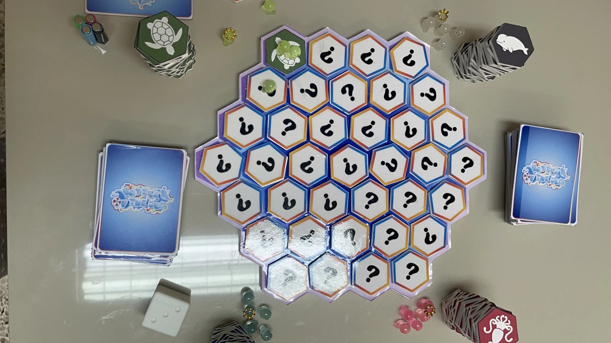
เกมวางแผนที่ชวนมองทะเล
เป็นพื้นที่ที่เราดูแลได้
เมื่อท้องทะเลถูกปกคลุมไปด้วยขยะและระบบนิเวศเริ่มเสื่อมโทรม เหล่าสัตว์ทะเลจึงออกมาร่วมมือกันฟื้นฟูบ้านของพวกมัน ผู้เล่นรับบทเป็นสัตว์ทะเล ออกสำรวจ เก็บขยะ ฟื้นฟูปะการัง และช่วยเหลือสัตว์ที่ได้รับผลกระทบ
แต่หัวหน้าสัตว์ทะเลทั้ง 4 — เต่า วาฬบรูด้า โลมา และปลาหมึก — ต่างต้องการก้าวขึ้นเป็น “เจ้าแห่งท้องทะเล” จึงต้องวางแผน แข่งขัน และยึดครองพื้นที่ พร้อมสะสมคะแนนให้มากที่สุด
จัดตำแหน่งทีมบนกระดานหกเหลี่ยม และเลือกจังหวะขยายพื้นที่
เก็บขยะ ฟื้นฟูปะการัง และช่วยเหลือสัตว์ทะเล
ใช้การ์ดให้เหมาะกับจังหวะ เพื่อเปลี่ยนสถานการณ์ในเกม
ทอย → เคลื่อนที่ → จั่วการ์ด → เลือกใช้การ์ด → จัดการไพ่ในมือ → จบเทิร์น
เลือกสี รับหมากปกติ 4 ตัวและ King 1 ตัว วางหมากที่จุดเริ่มต้น สุ่มเหรียญคะแนนคว่ำบนกระดาน สับการ์ดเป็นกองจั่ว และเตรียมเหรียญยึดพื้นที่
ทอยได้ 1–4 หมายถึงเลือกเดินหมากได้ 1–4 ตัว แต่ละตัวเดินได้เพียง 1 ช่อง และห้ามเดินข้ามช่อง พื้นที่ว่างใช้หมากปกติ 2 ตัวเพื่อยึด แล้ววางเหรียญยึดพื้นที่
จั่วการ์ด 1 ใบ เลือกใช้ตามเงื่อนไข ถือได้สูงสุด 5 ใบ หากครบ 5 ใบต้องใช้การ์ดให้เหลือน้อยกว่า 5 ก่อนรับเพิ่ม เมื่อเสร็จแล้วส่งต่อเทิร์น
เป็นตัวอย่างอธิบายลำดับเทิร์น ไม่ใช่การจำลองเกมเต็มรูปแบบ
เมื่อยึดครบ 5 ช่องจึงใช้ King ได้ เดินไปช่องใดก็ได้ในพื้นที่ตนเอง หากจะออกต้องไปช่องของตนที่ติดทางออกก่อน แล้วรอเทิร์นถัดไป นอกพื้นที่ตนเองเดินครั้งละ 1 ช่อง
ใช้ King ร่วมกับหมากปกติ 2 ตัว รวมเป็น 3 ตัว เพื่อยึดพื้นที่ของผู้เล่นอื่น
เมื่อทุกพื้นที่ถูกยึด เกมจบทันที รวมคะแนนเหรียญขยะ ปะการัง และสัตว์ทะเลในพื้นที่ของตน ผู้ได้คะแนนสูงสุดชนะ
จำนวนอุปกรณ์ตามคู่มือเกมที่แนบมา
กระดานหกเหลี่ยมสำหรับสำรวจและยึดพื้นที่
หมากปกติ 16 ตัว (สีละ 4) และ King 4 ตัว (สีละ 1)
การ์ดความสามารถ 10 ประเภท
เหรียญคะแนน 37 เหรียญ · เหรียญยึดพื้นที่ 88 เหรียญ (สีละ 22) · ลูกเต๋า 1 ลูก พร้อมสำรอง 1 ลูก
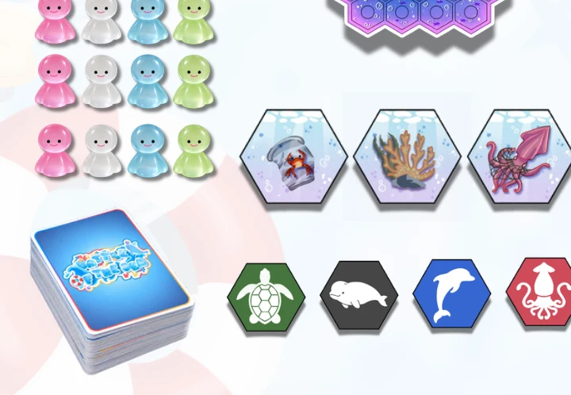
ภาพออกแบบอุปกรณ์จากคู่มือเกม
เต่า · วาฬบรูด้า · โลมา · ปลาหมึก
แต่ละทีมมีหมากปกติ 4 ตัว และ King 1 ตัว
ใช้ได้เมื่อครอบครองพื้นที่ครบ 5 ช่อง และใช้ร่วมกับหมากปกติ 2 ตัวในการยึดพื้นที่คู่แข่ง ทุกทีมใช้กติกาการเคลื่อนที่เดียวกันตามคู่มือ
ภาพการ์ดจากไฟล์ที่แนบมา · กดภาพเพื่อดูขนาดใหญ่
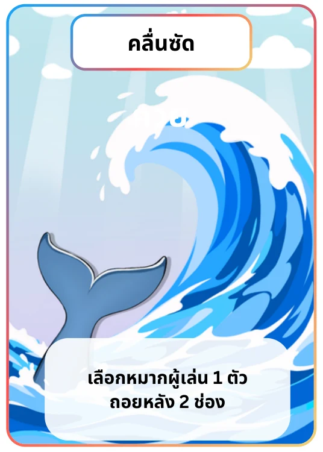
เลือกหมากผู้เล่น 1 ตัว ถอยหลัง 2 ช่อง
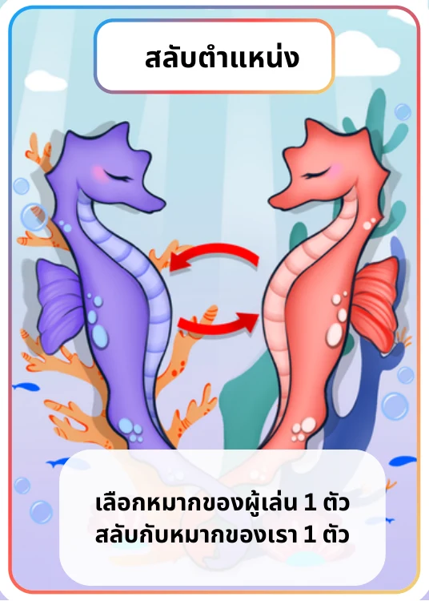
สลับหมากผู้เล่น 1 ตัวกับหมากของเรา 1 ตัว
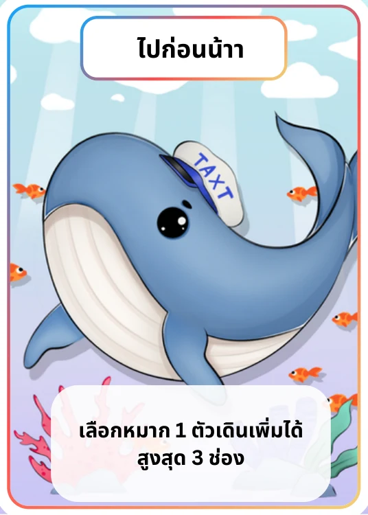
เลือกหมาก 1 ตัว เดินเพิ่มได้สูงสุด 3 ช่อง
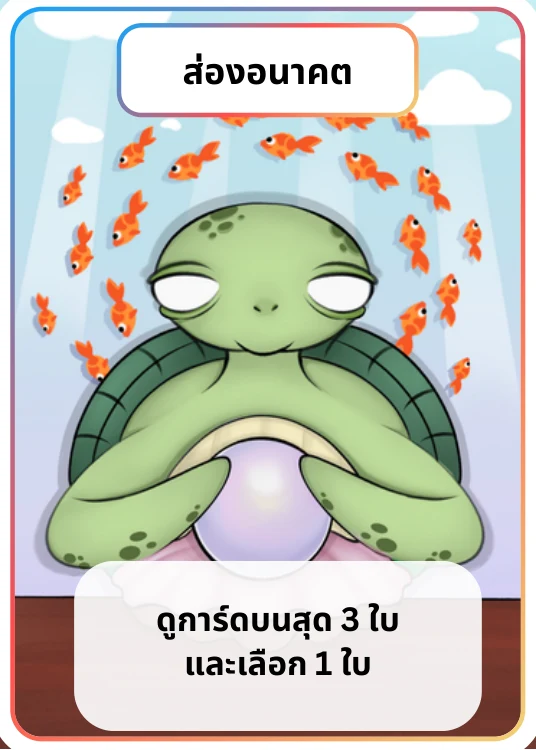
ดูการ์ดบนสุด 3 ใบ และเลือก 1 ใบ
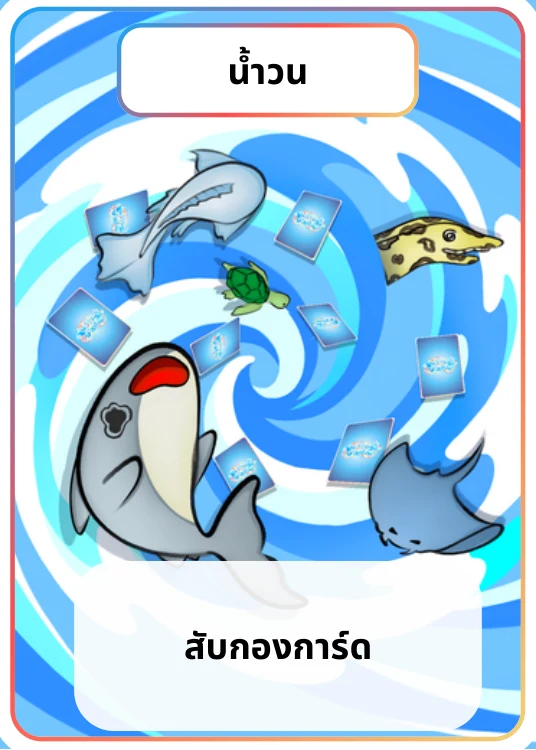
สับกองการ์ด
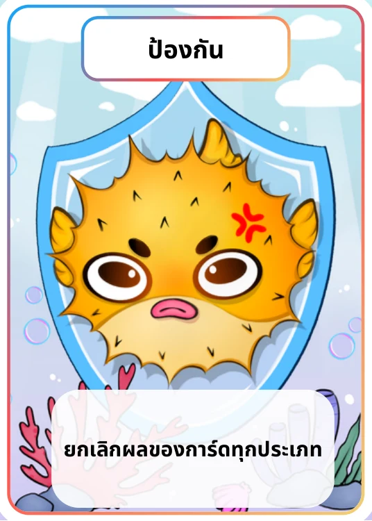
ยกเลิกผลของการ์ดทุกประเภท
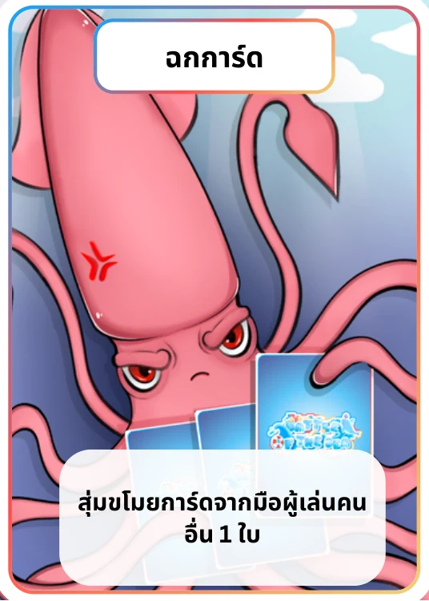
สุ่มขโมยการ์ดจากมือผู้เล่นอื่น 1 ใบ
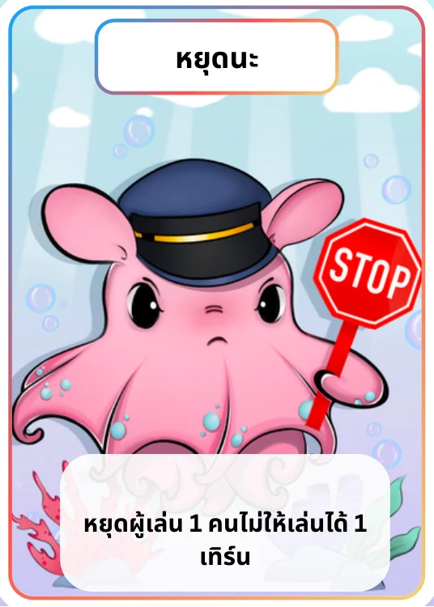
หยุดผู้เล่น 1 คน ไม่ให้เล่น 1 เทิร์น
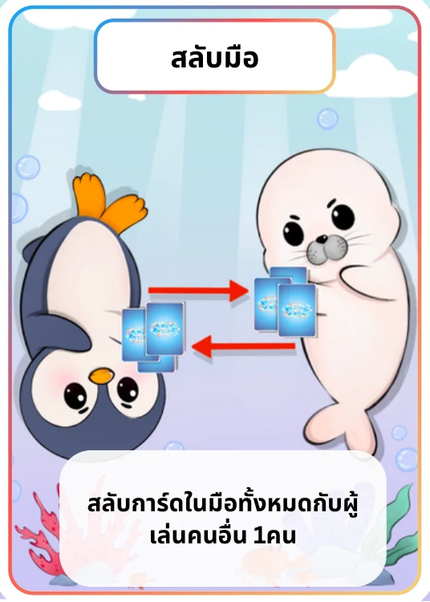
สลับการ์ดในมือทั้งหมดกับผู้เล่นอื่น 1 คน
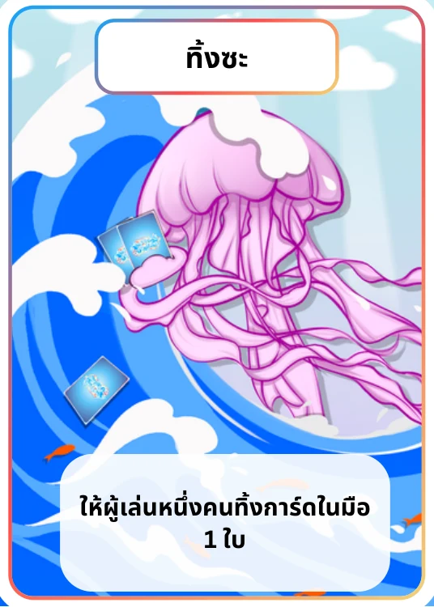
ให้ผู้เล่นหนึ่งคนทิ้งการ์ดในมือ 1 ใบ
ใช้การ์ดต่อเนื่องตามลำดับที่เลือก และทำคอมโบได้สูงสุด 1 ครั้งต่อเทิร์น คลื่นซัด สลับตำแหน่ง และไปก่อนน้าา ระบุสูงสุด 2 ใบ; ฉกการ์ดและทิ้งซะระบุสูงสุด 3 ใบ โดยต้องไม่ทำให้ไพ่ในมือเกิน 5 ใบ
คู่มือมีข้อความทั่วไปว่าใช้คอมโบ 2 ใบ แต่บางประเภทระบุ 3 ใบ โปรดตรวจรายละเอียดกับผู้สร้างเกมก่อนเล่น
ยังไม่มีภาพ Packaging / Mockup แยกจากอุปกรณ์จริง
เปิดอ่านหรือดาวน์โหลดคู่มือและไฟล์การ์ดที่ใช้ประกอบเกม
พื้นที่สำหรับติดต่อทีมผู้สร้างเกม
พร้อมใส่ช่องทางและ QR Code เมื่อมีข้อมูล